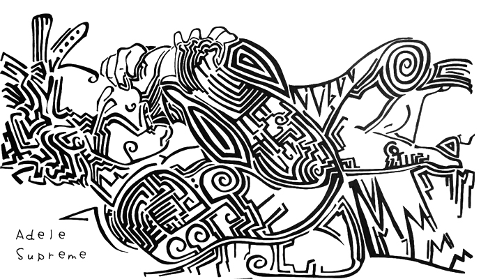

Q&A : ADELE SUPREME
As a child you are told to let your imagination run wild, sometimes for an artist that never stops. LA born and raised, and now Portland based artist, Adele Supreme, has a pretty wicked imagination. Nasty in fact. But nasty in the best way possible. Her art illustrates the mind of a woman of tapping into her power and prowess. Her work is carnal and raw, yet whimsical in execution with her black stream of conscious line work. It depicts women in powerful positions and creates caricatures engaging in a myriad of sexual acts sometimes with other people, sometimes with themselves, sometimes bound, or in a maze of sexual fluidity. Supreme’s work is an exploration of many intersecting themes of sexuality, femininity, superiority, spirituality, and walks the line between beauty and the grotesque.
The art may be explicit in nature, but the message is implicit. “It’s not what it looks like,” which was the theme of her residency and show The Pretty Nasty Imagination of Adele Supreme at Woman Made Gallery in Chicago this past fall. There are layers to her work; sit with it long enough and you will see things through a different perspective, sometimes a perspective that not even Supreme intended you to see. Just like she never intended to be an artist, though she has been creating since she was three. Her art served as a catharsis after a life tragedy, and has evolved into the powerful loud but hidden messages that she is gifting to the world.
AMFM: The show you had at Woman Made Gallery is called The Pretty Nasty Imagination Of Adele Supreme. Can you explain what this means to you and how this relates to the body of work in itself? What's so nasty about your mind?
ADELE SUPREME: The ironic thing about it is that it’s not nasty. Before I started to delve into the narrative of erroticism, I actually painted a lot of macabre, violent paintings. There was a time where I was going to go with the ‘pretty terrible imagination thing.’ My best friend walked into my apartment and she saw half of the canvas I was working on that I had bedazzled with glitter and she says “ Oh Adele that’s pretty,” then she comes all the way inside and sees the rest of it and she's like “ dude, that’s terrible. Why did u paint that?” Her reaction was dope because it amplified and oxymoronic theme I was going for. When I started to delve into erotic paintings I got into the pretty nasty. I got criticized privately, not publicly. People would dm me. It's so interesting that because I’m a black woman, people would have this expectation that I should uphold a certain representation. So they’re like “this is nasty,” and it perpetuates what society already thinks about women and sex. Or, “it’s raunchy.” I had someone mention that I never show women having a good time and that I always show men in these superior positions...having two women asking “why can't women have two men?”
ADELE: It’s expected with this subject matter. When you walk into a gallery of this subject matter and you see a man sucking on a strap on that's bedazzled, and beautiful you might be a little turned off. I expect the criticism, I expect the turning of the noses and the disgust, but I stand by this. I stand by people seeing things for what they are, and I like to challenge people and what they’ve been conditioned to believe. I love fucking with people’s first response. If you spend enough time in my galleries and work, people start to see that it's not just about fucking. I promise you it's not what it looks like. I put thought into everything I do as an artist. I need people to really look at what's in front of them. After a while the raunchy and sexual overtones and undertones start to just fade into the background and you can find yourself getting lost in that, feeling both introspective and retrospective.
AMFM: If it’s not what It looks like, What do you see through your art work? What do you want people to look for or see?
ADELE: There's nothing in particular because people have seen things that even I haven't seen. Every time I talk to someone about one of my pieces they point out things that even I didn't recognize. I had a talk and tour with a guest and I explained what my interpretation was and I have to be sure to explain that despite my explanation, this in my interpretation. I don't want what I say to dictate what they see. I don't want to nullify that. I always want people to see more.
AMFM: What would you say are the most important and prevalent things in your work that you address and why?
ADELE: A lot of the symbolism that I use are African Kemetic symbols. It’s so crazy because I was watching this documentary I saw with my partner the other day, and they were talking about the Bible, and the Bible being Black American’s History books. Basically it's like if you want to know where you’re from, you’re told to read the Bible. They alluded to some experts in the Willie Lynch letters where Willie Lynch explains the destruction of our culture by diminishing our identities so much that they (Blacks) don't remember where they come from. That’s how you destroy the people right? They talk about how even when you incite a memory in the people, you can invoke a sense of empowerment and entitlement. So, I use Kemetic symbolism that represents power because I believe it can evoke some memory and a feeling of empowerment in my people. I think the beautiful thing in my work, even though I do not color the flesh of my bodies, is that it’s still very black. Yet, I don't want to alienate other demographics because I have people of all ethnicities receive something different from my work. I also recently started incorporating Japanese symbols of power in my work.
AMFM: Who do you create artwork for? Is it for yourself, for the people, or for the message in itself?
AMFM: I read that you started drawing at the age three and you talked about how this hobby transformed into a full blown passion. How do you view your transformation and what was the catalyst?
ADELE: Drawing was definitely a hobby. I never thought growing up that it could be a career. I didn't know what a passion was, but it became so when my mother passed away in 2006. The catalyst for me wasn't like ‘oh, I want to paint and like and change the world,’ the catalyst for me was death. My mother died. When you're young in today's society the mantra is “live fast die young.” You feel pretty damn invincible by 27, but when my mother passed away it reminded me that this life is so temporary. So many people came to her funeral. People of so many different backgrounds came to pay respects from baristas to salesmen. This opened my eyes, and I saw how those people were her legacy. I learned that everything isn't in a name, it's in who you touch on a spiritual level. I learned that I wanted to leave a mark here. In 2006 I started painting and I stuck to that.
AMFM: How do you feel about impermanence in art and how does that translate to you?
ADELE: It’s so interesting because everyone here serves a purpose. I was definitely one of those artists that had a strong attachment to their pieces and refused to sell no matter the price because of my attachment to my art. It wasn't until this tech guy I was dating was looking at one of my pieces and said, “this piece does not belong here.” He said something along the lines of “this does not belong to you, people need it.” He didn't even look at me when he said. He said it casually while flipping through things. People would say that, but it was something about the way he said it. I was like “Yo.” After he said that I became less attached to it and I started to realize that this isn't mine. The idea of it being impermanent doesn't bother me because of how it resonates in people's spirits and how it impacts psychologically and spiritually will outlive anything I will ever do. You know, someone came in this space, saw something, felt something, had another conversation with another motherfucker and it changed their lives. Moments can change our entire lives in an instant. But walls, I love painting on walls, and I know at some point the walls will be painted over. I've painted on all my walls in my apartment.
AMFM: What is taboo to you?
ADELE: I don't believe in it. There's some things I don't agree with. There’s some things I’m not down with, but who’s to say it’s wrong. There’s some people who think beasilty is the way of life and I’m just like ok, that’s fine I just know I don't fuck with that. Think about racism. We were taught that being black was a taboo or a curse, I don't believe in that.
AMFM: What does the glitter in your work represent?
AMFM: Last question, What is your magic?
ADELE: What is my magic? Thats a good ass question. I think my magic is my long suffering. My patience. There's a gift in that. It’s my open mindedness because it allows me to do stuff like this and not flinch and be comfortable in it.
FOR MORE FROM ADELE SUPREME:
INSTAGRAM
Also, check out the new podcast episode featuring Adele Supreme from our friends over at P Power Radio to hear more about her work!